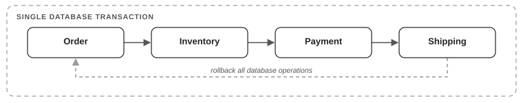
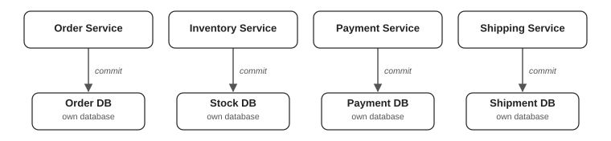
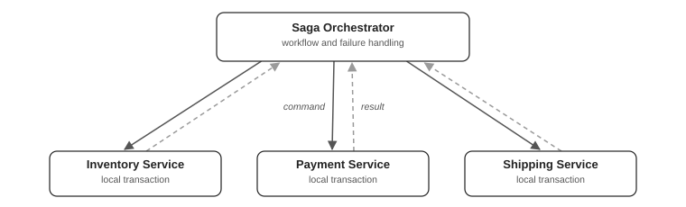
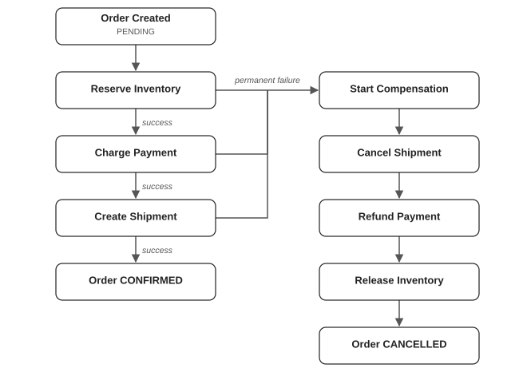
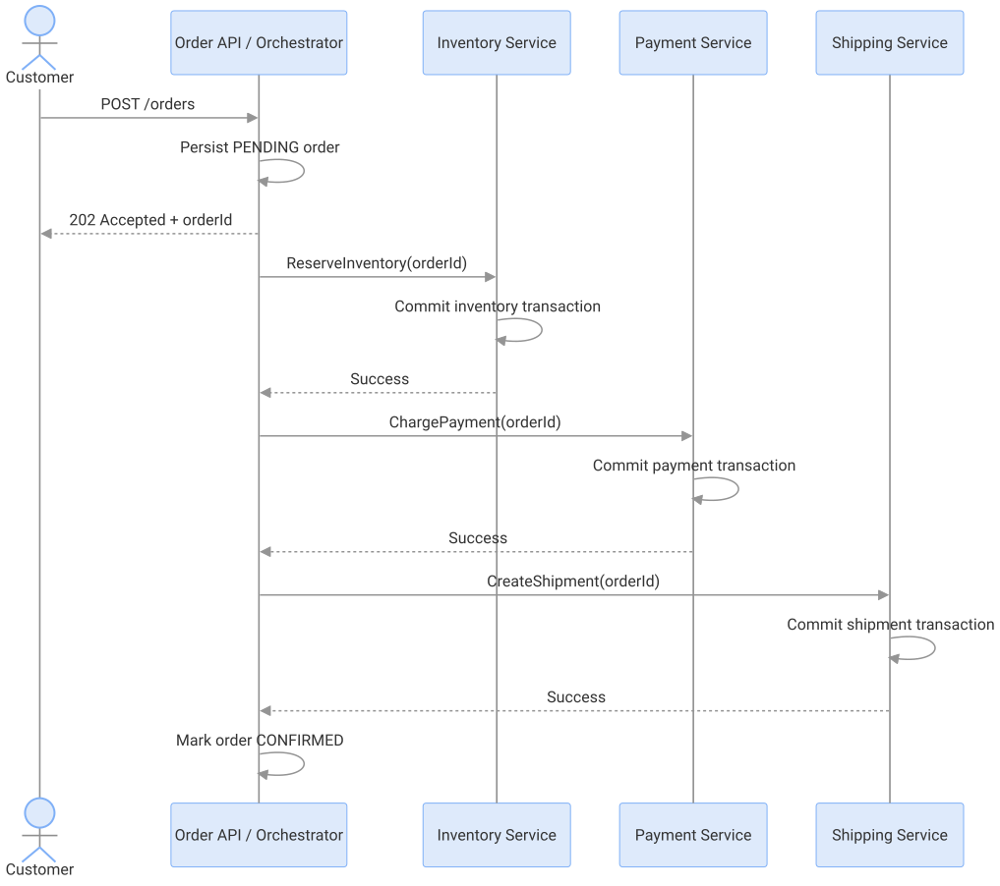
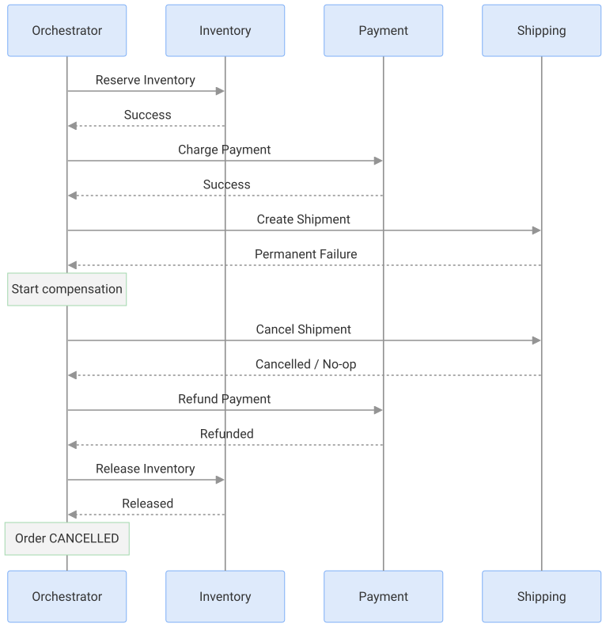
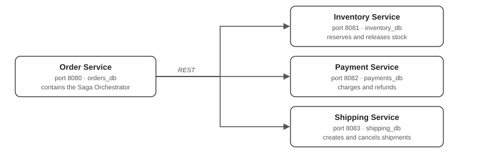

| Step | Operation | Result |
|---|---|---|
| 1 | Create order | Committed |
| 2 | Reserve inventory | Committed |
| 3 | Charge payment | Committed |
| 4 | Create shipment | Failed |
The Saga Orchestration Pattern is a distributed transaction management pattern used in microservices where a single business operation spans multiple independently deployed services, each owning its own database.
Instead of using one large database transaction, Saga breaks the business operation into multiple smaller, locally committed transactions. A central component called the Saga Orchestrator coordinates these transactions, determines their execution order, handles failures, and initiates compensating transactions when necessary.
We will cover the architecture, internal working, state management, failure scenarios and a practical implementation using Java, Spring Boot, Spring Data JPA, REST APIs and separate databases.
Consider an e-commerce application that contains four microservices:
When a customer places an order, the application must perform several operations:
All these steps together represent one business transaction.
In a monolithic application
Imagine all these operations use the same database.
@Service
public class OrderService {
@Transactional
public void placeOrder(OrderRequest request) {
orderRepository.save(createOrder(request));
inventoryRepository.reserveStock(request.productId(), request.quantity());
paymentRepository.save(createPayment(request));
shippingRepository.save(createShipment(request));
}
}Because all repositories participate in the same database transaction, Spring's Transactional can provide atomicity.
When creating a shipment fails, the database transaction can roll back the previous operations.

Illustration assumes all operations are in one ACID transaction and no external irreversible side effects have occurred.
In a microservices architecture
Now imagine every service owns a separate database.

Suppose execution produces these results:
| Step | Operation | Result |
|---|---|---|
| 1 | Create order | Committed |
| 2 | Reserve inventory | Committed |
| 3 | Charge payment | Committed |
| 4 | Create shipment | Failed |
The problem is that the order, inventory reservation and payment were already committed in different databases.
A failure in the Shipping Service cannot automatically roll back the Payment Service's database transaction.
The Transactional annotation does not make the REST calls part of the Order Service's database transaction.
It normally manages transactions only for the resources enlisted in that transaction manager.
Consequently, we could end up with:
This is precisely the kind of problem that the Saga Pattern addresses.
A Saga is a sequence of local ACID transactions, where each transaction is executed by an individual service.
The overall business operation is completed by coordinating these local transactions.
If a step fails, the system performs compensating transactions to reverse or semantically undo the effects of previously completed steps.
Mathematically, we can represent the forward transactions as:
Saga = T1 → T2 → T3 → ⋯ → Tn
Each Ti is a local transaction performed by one microservice.
For transactions that require compensation, define a corresponding action Ci.
If transaction T3 fails after T1 and T2 have succeeded, the Saga may execute:
T1 → T2 → T3(Failure)
⇓
C2 → C1
In our e-commerce example:
| Forward transaction | Service | Compensation |
|---|---|---|
| Create pending order | Order | Cancel order |
| Reserve inventory | Inventory | Release inventory |
| Charge payment | Payment | Refund payment |
| Create shipment | Shipping | Cancel shipment, if created |
A compensation is a new business transaction, not a database-level rollback. For example, a refund does not erase the original payment from financial records; it creates a separate reversing financial operation.
Important characteristics
Local atomicity: Every service uses its own database transaction.
Eventual consistency: The overall system can temporarily contain intermediate states, but should eventually reach an accepted business outcome if all required actions can complete.
Compensation: Completed operations are reversed using domain-specific logic.
No global ACID transaction: One transaction does not lock or control all the service databases.
Failure recovery: A reliable Saga must remember its current state so execution can resume after process crashes.
Saga orchestration does not automatically provide isolation between concurrent business operations and it does not guarantee that every real-world action can be undone.
There are two primary approaches to coordinating a Saga:
Choreography-based Saga
In choreography, there is no central workflow coordinator. Services react to events emitted by other services.
For example:
Order Service
|
| OrderCreated event
v
Inventory Service
|
| InventoryReserved event
v
Payment Service
|
| PaymentCompleted event
v
Shipping Service
|
| ShipmentCreated event
v
Order Service
|
v
Order ConfirmedEach participant needs to know which events to consume and which subsequent events to publish.
Orchestration-based Saga
In orchestration, a central component called the Saga Orchestrator explicitly tells participants what to do.

The orchestrator determines:
Choreography vs. Orchestration
| Aspect | Choreography | Orchestration |
|---|---|---|
| Coordinator | No central coordinator | Central orchestrator |
| Communication | Primarily events | Commands and replies |
| Workflow visibility | Distributed across services | Centralized |
| Complex workflows | Can become difficult to follow | Generally easier to manage |
| Coupling | Event contracts | Orchestrator knows participants |
| Compensation | Event-driven | Explicitly coordinated |
| Testing | Often more involved | State-machine tests are straightforward |
| Central component | Not required | Orchestrator must be reliable |
| Best use | Relatively simple, decoupled flows | Complex multi-step transactions |
Both approaches can be reliable and scalable. The difference is how coordination responsibility is distributed.
For the rest of this tutorial, we will focus specifically on Saga Orchestration.
A reliable Saga Orchestrator is more than a Java class that calls three REST APIs.
Conceptually, it is a persistent state machine.
Consider our order workflow:

The compensation path is deliberately idempotent. In our implementation, asking a service to compensate an operation that never happened is safe: the service records a cancellation or reversal marker to prevent a delayed original command from applying afterward.
Successful execution

Each participant commits its transaction independently.
Failure during shipment creation

The order cannot be considered cancelled merely because shipment creation failed.
Cancellation becomes complete only after the required compensations have succeeded.
What does the orchestrator store?
A typical Saga might record:
| Field | Example |
|---|---|
sagaId | a1b2-... |
orderId | 9f20-... |
status | CANCELLING |
currentStep | REFUND_PAYMENT |
retryCount | 2 |
nextAttemptAt | Timestamp |
lastError | Payment API unavailable |
version | 7 |
This persistent information makes it possible to restart an incomplete workflow rather than beginning the whole process again blindly.
We will build four independent Spring Boot applications.
Application architecture

We'll use:
RestClientThe code focuses on the distributed transaction mechanics. Authentication, full payment-provider integration, deployment configuration, and operational infrastructure are intentionally outside the runnable core.
Spring Boot provides an auto-configured RestClient.Builder, which is well suited to synchronous REST-based orchestration.
saga-orchestration/
│
├── order-service/
│ ├── pom.xml
│ └── src/main/
│ ├── java/com/example/orders/
│ │ ├── OrderApplication.java
│ │ ├── CustomerOrder.java
│ │ ├── OrderRepository.java
│ │ ├── OrderStateService.java
│ │ ├── ParticipantClients.java
│ │ ├── SagaWorker.java
│ │ └── OrderController.java
│ └── resources/application.properties
│
├── inventory-service/
│ ├── pom.xml
│ └── src/main/
│ ├── java/com/example/inventory/
│ │ ├── InventoryApplication.java
│ │ ├── ProductStock.java
│ │ ├── Reservation.java
│ │ ├── InventoryService.java
│ │ └── InventoryController.java
│ └── resources/application.properties
│
├── payment-service/
│ ├── pom.xml
│ └── src/main/
│ ├── java/com/example/payment/
│ └── resources/application.properties
│
└── shipping-service/
├── pom.xml
└── src/main/
├── java/com/example/shipping/
└── resources/application.propertiesEach directory is an independently deployable application.
Each service has its own file-backed H2 database.
Order Service
spring.application.name=order-service
server.port=8080
spring.datasource.url=jdbc:h2:file:./data/orders
spring.datasource.username=sa
spring.datasource.password=
spring.jpa.hibernate.ddl-auto=update
spring.jpa.open-in-view=false
clients.inventory=http://localhost:8081
clients.payment=http://localhost:8082
clients.shipping=http://localhost:8083
saga.poll-delay-ms=1000Inventory Service
spring.application.name=inventory-service
server.port=8081
spring.datasource.url=jdbc:h2:file:./data/inventory
spring.datasource.username=sa
spring.datasource.password=
spring.jpa.hibernate.ddl-auto=update
spring.jpa.open-in-view=falsePayment Service
spring.application.name=payment-service
server.port=8082
spring.datasource.url=jdbc:h2:file:./data/payments
spring.datasource.username=sa
spring.datasource.password=
spring.jpa.hibernate.ddl-auto=update
spring.jpa.open-in-view=falseShipping Service
spring.application.name=shipping-service
server.port=8083
spring.datasource.url=jdbc:h2:file:./data/shipping
spring.datasource.username=sa
spring.datasource.password=
spring.jpa.hibernate.ddl-auto=update
spring.jpa.open-in-view=falseFor production, use persistent databases such as PostgreSQL or MySQL and manage schemas through Flyway or Liquibase rather than Hibernate's ddl-auto=update.
The Saga needs to know exactly what to execute next.
Instead of maintaining progress only in Java memory, we define persistent states.
public enum SagaPhase {
RESERVE_INVENTORY, CHARGE_PAYMENT, CREATE_SHIPMENT, # Forward workflow
CANCEL_SHIPMENT, REFUND_PAYMENT, RELEASE_INVENTORY, # Compensation workflow
COMPLETED, CANCELLED # Terminal phases
}public enum OrderStatus {
PENDING, CONFIRMED, CANCELLING, CANCELLED
}Notice that SagaPhase and OrderStatus represent different concepts.
OrderStatus describes the business-level order state.
SagaPhase describes the operation that the orchestrator must perform next.
For example, an order can be CANCELLING while the Saga phase is REFUND_PAYMENT.
CustomerOrder.java
@Entity
@Table(name = "customer_orders", uniqueConstraints = @UniqueConstraint(columnNames = "request_key"))
@Getter
@Setter
public class CustomerOrder {
@Id
private UUID id;
@Column(name = "request_key", nullable = false)
private String requestKey;
private String customerId;
private String sku;
private int quantity;
private double amount;
@Enumerated(EnumType.STRING)
private OrderStatus status;
@Enumerated(EnumType.STRING)
private SagaPhase phase;
private int retryCount;
private Instant nextAttemptAt;
@Column(length = 2000)
private String lastError;
@Version
private long version;
protected CustomerOrder() {}
public CustomerOrder(String requestKey, CreateOrderRequest request) {
this.id = UUID.randomUUID();
this.requestKey = requestKey;
this.customerId = request.getCustomerId();
this.sku = request.getSku();
this.quantity = request.getQuantity();
this.amount = request.getAmount();
this.status = OrderStatus.PENDING;
this.phase = SagaPhase.RESERVE_INVENTORY;
this.retryCount = 0;
this.nextAttemptAt = Instant.now();
}
}Our code stores the Saga state on the order itself because each order has exactly one order-creation Saga.
A larger application may instead maintain separate orders, saga_instances, and saga_steps tables. That is often preferable when orders participate in multiple different Saga workflows.
Why do we need Version?
Version enables optimistic locking.
Worker A reads Order version 5
Worker B reads Order version 5
Worker A updates -> version becomes 6
Worker B updates -> optimistic lock failureThis prevents Worker B from silently overwriting Worker A's database changes.
However, optimistic locking alone does not prevent both workers from making the same external REST call.
A distributed worker-claim or leasing mechanism is still required when multiple orchestrator instances process Sagas concurrently.
@Getter
@Setter
public class CreateOrderRequest {
@NotBlank
private String customerId;
@NotBlank
private String sku;
@Min(1)
private int quantity;
@DecimalMin("0.01")
private double amount;
}@Getter
public class OrderResponse {
private UUID orderId;
private OrderStatus status;
private SagaPhase phase;
private String lastError;
public OrderResponse(UUID orderId, OrderStatus status, SagaPhase phase, String lastError) {
this.orderId = orderId;
this.status = status;
this.phase = phase;
this.lastError = lastError;
}
public static OrderResponse from(CustomerOrder o) {
return new OrderResponse(o.getId(), o.getStatus(), o.getPhase(), o.getLastError());
}
}In a real checkout system, the server should calculate payment amounts from trusted price data rather than accepting arbitrary client-provided amounts. We're keeping the price in the request to simplify the distributed transaction example.
public interface OrderRepository extends JpaRepository<CustomerOrder, UUID> {
Optional<CustomerOrder> findByRequestKey(String requestKey);
@Query("""
SELECT o.id
FROM CustomerOrder o
WHERE o.phase NOT IN :terminalPhases
AND o.nextAttemptAt <= :now
ORDER BY o.nextAttemptAt ASC
""")
List<UUID> findDueSagaIds(Collection<SagaPhase> terminalPhases, Instant now, Pageable pageable);
}The second query is particularly important.
It retrieves Sagas that are not completed and are due for execution or retry.
This allows the application to resume workflows after restarts.
Every Saga transition must be committed independently of external HTTP requests.
@Service
public class OrderStateService {
@Autowired
private OrderRepository repository;
@Transactional
public OrderResponse create(String requestKey, CreateOrderRequest request) {
var existing = repository.findByRequestKey(requestKey);
if (existing.isPresent()) {
CustomerOrder order = existing.get();
boolean sameRequest =
order.getCustomerId().equals(request.getCustomerId())
&& order.getSku().equals(request.getSku())
&& order.getQuantity() == request.getQuantity()
&& order.getAmount() == request.getAmount();
if (!sameRequest) {
throw new ResponseStatusException(HttpStatus.CONFLICT,
"Idempotency key reused with different data");
}
return OrderResponse.from(order);
}
CustomerOrder order = new CustomerOrder(requestKey, request);
repository.save(order);
return OrderResponse.from(order);
}
@Transactional(readOnly = true)
public CustomerOrder get(UUID orderId) {
return repository.findById(orderId)
.orElseThrow(() -> new ResponseStatusException(HttpStatus.NOT_FOUND, "Order not found"));
}
@Transactional
public void moveTo(UUID orderId, SagaPhase next) {
CustomerOrder order = get(orderId);
order.setPhase(next);
order.setRetryCount(0);
order.setNextAttemptAt(Instant.now());
if (next == SagaPhase.COMPLETED) {
order.setStatus(OrderStatus.CONFIRMED);
} else if (next == SagaPhase.CANCELLED) {
order.setStatus(OrderStatus.CANCELLED);
}
}
@Transactional
public void beginCompensation(UUID orderId, String reason) {
CustomerOrder order = get(orderId);
order.setStatus(OrderStatus.CANCELLING);
order.setPhase(SagaPhase.CANCEL_SHIPMENT);
order.setRetryCount(0);
order.setNextAttemptAt(Instant.now());
order.setLastError(reason);
}
@Transactional
public void recordTransientFailure(UUID orderId, String reason) {
CustomerOrder order = get(orderId);
order.setRetryCount(order.getRetryCount() + 1);
order.setLastError(reason);
boolean compensating = switch (order.getPhase()) {
case CANCEL_SHIPMENT, REFUND_PAYMENT, RELEASE_INVENTORY -> true;
default -> false;
};
# Give up forward execution after a retry budget.
# Never pretend an unsuccessful compensation succeeded.
if (!compensating && order.getRetryCount() >= 5) {
order.setStatus(OrderStatus.CANCELLING);
order.setPhase(SagaPhase.CANCEL_SHIPMENT);
order.setRetryCount(0);
}
# Exponential backoff, capped at 60 seconds.
int exponent = Math.min(order.getRetryCount(), 6);
long delay = Math.min(60L, 1L << exponent);
order.setNextAttemptAt(Instant.now().plusSeconds(delay));
}
}Why are these methods transactional?
Because state transitions themselves must be atomic and durable.
For example:
@Transactional
public void moveTo(UUID orderId, SagaPhase next)ensures the update to the order's state is committed as a local database transaction.
The orchestrator calls this method after a participant REST call succeeds.
We never hold a single database transaction open across the entire distributed workflow.
Why persist the next phase?
Imagine this sequence:
1. Inventory reservation succeeds
2. Orchestrator changes phase to CHARGE_PAYMENT
3. Phase is committed to database
4. Order Service crashes
5. Order Service restarts
6. Worker reads CHARGE_PAYMENT
7. Payment step resumesWe don't have to restart the Saga at the beginning.
There is another important case:
1. Inventory reservation succeeds
2. Order Service crashes BEFORE saving CHARGE_PAYMENT
3. Worker retries RESERVE_INVENTORYThis must also be safe.
We make it safe by implementing idempotent participant operations. Reserving inventory twice for the same order ID must not deduct stock twice.
The unique request_key also establishes request-level idempotency. Under concurrent duplicate POST requests, the database unique constraint is the final guard; a production API should additionally catch a uniqueness conflict and reread the existing order to return the same response.
ParticipantClientConfig.java
@Configuration
public class ParticipantClientConfig {
private ClientHttpRequestFactory requestFactory() {
var factory = new SimpleClientHttpRequestFactory();
factory.setConnectTimeout(Duration.ofSeconds(2));
factory.setReadTimeout(Duration.ofSeconds(3));
return factory;
}
@Bean("inventoryClient")
RestClient inventoryClient(RestClient.Builder builder, @Value("${clients.inventory}") String url) {
return builder.clone().baseUrl(url).requestFactory(requestFactory()).build();
}
@Bean("paymentClient")
RestClient paymentClient(RestClient.Builder builder, @Value("${clients.payment}") String url) {
return builder.clone().baseUrl(url).requestFactory(requestFactory()).build();
}
@Bean("shippingClient")
RestClient shippingClient(RestClient.Builder builder, @Value("${clients.shipping}") String url) {
return builder.clone().baseUrl(url).requestFactory(requestFactory()).build();
}
}Timeouts matter because the orchestrator must not remain blocked indefinitely on a network request.
A timeout does not prove that the remote operation failed. The remote service might already have committed the transaction before the response was lost. We will handle this through idempotency and safe retries.
This component isolates communication with other microservices.
ParticipantClients.java
@Component
public class ParticipantClients {
@Autowired
@Qualifier("inventoryClient")
private RestClient inventory;
@Autowired
@Qualifier("paymentClient")
private RestClient payment;
@Autowired
@Qualifier("shippingClient")
private RestClient shipping;
@Getter
@Setter
public static class InventoryCommand {
private UUID orderId;
private String sku;
private int quantity;
public InventoryCommand(UUID orderId, String sku, int quantity) {
this.orderId = orderId;
this.sku = sku;
this.quantity = quantity;
}
}
@Getter
@Setter
public static class PaymentCommand {
private UUID orderId;
private String customerId;
private double amount;
public PaymentCommand(UUID orderId, String customerId, double amount) {
this.orderId = orderId;
this.customerId = customerId;
this.amount = amount;
}
}
@Getter
@Setter
public static class ShippingCommand {
private UUID orderId;
public ShippingCommand(UUID orderId) {
this.orderId = orderId;
}
}
public void reserveInventory(CustomerOrder order) {
inventory.post()
.uri("/inventory/reservations")
.body(new InventoryCommand(order.getId(), order.getSku(), order.getQuantity()))
.retrieve().toBodilessEntity();
}
public void chargePayment(CustomerOrder order) {
payment.post()
.uri("/payments/charges")
.body(new PaymentCommand(order.getId(), order.getCustomerId(), order.getAmount()))
.retrieve().toBodilessEntity();
}
public void createShipment(CustomerOrder order) {
shipping.post()
.uri("/shipments")
.body(new ShippingCommand(order.getId()))
.retrieve().toBodilessEntity();
}
# Compensation methods
public void cancelShipment(CustomerOrder order) {
shipping.post()
.uri("/shipments/cancel")
.body(new ShippingCommand(order.getId()))
.retrieve().toBodilessEntity();
}
public void refundPayment(CustomerOrder order) {
payment.post()
.uri("/payments/refunds")
.body(new PaymentCommand(order.getId(), order.getCustomerId(), order.getAmount()))
.retrieve().toBodilessEntity();
}
public void releaseInventory(CustomerOrder order) {
inventory.post()
.uri("/inventory/reservations/release")
.body(new InventoryCommand(order.getId(), order.getSku(), order.getQuantity()))
.retrieve().toBodilessEntity();
}
}Notice that all commands contain an orderId.
For this Saga, it serves as a stable business operation identifier that the participants use for idempotency.
For more sophisticated systems, use an explicit unique operation ID for every step:
order-123:reserve-inventory
order-123:charge-payment
order-123:create-shipment
order-123:cancel-shipment
order-123:refund-payment
order-123:release-inventorySuch IDs make retries, deduplication, logging, and auditing easier.
This is the central part of the implementation.
SagaWorker.java
@Service
public class SagaWorker {
private static final Logger log = LoggerFactory.getLogger(SagaWorker.class);
@Autowired
private OrderRepository repository;
@Autowired
private OrderStateService states;
@Autowired
private ParticipantClients clients;
@Scheduled(fixedDelayString = "${saga.poll-delay-ms:1000}")
public void processDueSagas() {
var terminal = List.of(SagaPhase.COMPLETED, SagaPhase.CANCELLED);
List<UUID> orderIds = repository.findDueSagaIds(terminal, Instant.now(), PageRequest.of(0, 100));
for (UUID orderId : orderIds) {
try {
executeOneStep(orderId);
} catch (Exception unexpected) {
log.error("Unexpected error for Saga {}", orderId, unexpected);
}
}
}
public void executeOneStep(UUID orderId) {
CustomerOrder order = states.get(orderId);
try {
switch (order.getPhase()) {
case RESERVE_INVENTORY -> {
clients.reserveInventory(order);
states.moveTo(orderId, SagaPhase.CHARGE_PAYMENT);
}
case CHARGE_PAYMENT -> {
clients.chargePayment(order);
states.moveTo(orderId, SagaPhase.CREATE_SHIPMENT);
}
case CREATE_SHIPMENT -> {
clients.createShipment(order);
states.moveTo(orderId, SagaPhase.COMPLETED);
}
# Reverse order of compensation
case CANCEL_SHIPMENT -> {
clients.cancelShipment(order);
states.moveTo(orderId, SagaPhase.REFUND_PAYMENT);
}
case REFUND_PAYMENT -> {
clients.refundPayment(order);
states.moveTo(orderId, SagaPhase.RELEASE_INVENTORY);
}
case RELEASE_INVENTORY -> {
clients.releaseInventory(order);
states.moveTo(orderId, SagaPhase.CANCELLED);
}
case COMPLETED, CANCELLED -> {
# Nothing left to execute
}
}
} catch (RestClientResponseException ex) {
int status = ex.getStatusCode().value();
if (isForward(order.getPhase()) && (status == 409 || status == 422)) {
states.beginCompensation(orderId, ex.getMessage()); # Permanent business rejection
} else {
# Infrastructure issue or uncertain result
states.recordTransientFailure(orderId, ex.getMessage());
}
} catch (RestClientException ex) {
# Network error / timeout.
# We cannot assume the remote service did nothing.
states.recordTransientFailure(orderId, ex.getMessage());
}
}
private boolean isForward(SagaPhase phase) {
return switch (phase) {
case RESERVE_INVENTORY, CHARGE_PAYMENT, CREATE_SHIPMENT -> true;
default -> false;
};
}
}This code shows several important orchestration principles.
The orchestrator is a state machine
Instead of a long method containing every operation inside a single transaction, execution is based on the persisted Saga phase.
switch (order.getPhase()) {
case RESERVE_INVENTORY -> ...
case CHARGE_PAYMENT -> ...
case CREATE_SHIPMENT -> ...
}Each step is independently retryable
If the Payment Service becomes temporarily unavailable, the order remains in CHARGE_PAYMENT.
When the next retry becomes due, the worker executes that step again.
Compensation is also persistent
If payment succeeds but shipping permanently fails, the Saga enters:
CANCEL_SHIPMENT
|
v
REFUND_PAYMENT
|
v
RELEASE_INVENTORY
|
v
CANCELLEDIf the orchestrator crashes while processing a refund, it can resume from REFUND_PAYMENT after restarting.
Compensation is never silently skipped
Suppose the refund endpoint is unavailable.
The Saga remains in REFUND_PAYMENT and retries with backoff.
It does not incorrectly mark the order CANCELLED while the customer may still be charged.
Forward retries have a limit
Our demonstration retries a transient forward failure up to five times before starting compensation.
A real application should define different policies for each failure type. For example, a payment gateway might be unavailable for several minutes without that being a reason to immediately cancel every order.
Important limitation of this worker
This scheduler is suitable for a single orchestrator worker in a demonstration.
If the Order Service is deployed with multiple replicas, several workers could pick up the same Saga. The database @Version check alone does not protect the external side effects.
A production version should atomically claim work using a lease, lock, or queue-based ownership mechanism. We will discuss this in the production section.
OrderController.java
@RestController
@RequestMapping("/orders")
public class OrderController {
@Autowired
private OrderStateService states;
@PostMapping
public ResponseEntity<OrderResponse> create(
@RequestHeader("Idempotency-Key")
String requestKey,
@Valid @RequestBody
CreateOrderRequest request
) {
OrderResponse response = states.create(requestKey, request);
return ResponseEntity.accepted().body(response);
}
@GetMapping("/{orderId}")
public OrderResponse get(@PathVariable UUID orderId) {
return OrderResponse.from(states.get(orderId));
}
}The API returns 202 Accepted because creating the order record does not mean that the entire distributed business operation has finished.
The client can poll the status endpoint while the Saga is running.
Finally, enable scheduling.
OrderApplication.java
@SpringBootApplication
@EnableScheduling
public class OrderApplication {
public static void main(String[] args) {
SpringApplication.run(OrderApplication.class, args);
}
}At this point, the Order Service can create and persist Saga instances.
Next, we need to implement the participating services that execute the actual local transactions.
The Inventory Service needs two operations:
reserveInventory() — deduct available inventory and create a reservation.releaseInventory() — restore inventory if previously reserved.Both operations must be idempotent.
Imagine an item initially has 10 units available.
Inventory changes for an order requesting 3 units
If the same reservation command is delivered twice, stock must remain at 7, not decrease to 4.
ProductStock.java
@Entity
@Getter
@Setter
public class ProductStock {
@Id
private String sku;
private int available;
protected ProductStock() {}
public ProductStock(String sku, int available) {
this.sku = sku;
this.available = available;
}
}Reservation.java
public enum ReservationStatus {
RESERVED, RELEASED
}
@Entity
@Getter
@Setter
public class Reservation {
@Id
private UUID orderId;
private String sku;
private int quantity;
@Enumerated(EnumType.STRING)
private ReservationStatus status;
protected Reservation() {}
public Reservation(UUID orderId, String sku, int quantity, ReservationStatus status) {
this.orderId = orderId;
this.sku = sku;
this.quantity = quantity;
this.status = status;
}
}We maintain a separate Reservation entity because merely decrementing the stock is not enough.
The service must remember which order reserved how much inventory, whether that reservation has already been released, and whether a future duplicate reservation should be rejected.
public interface StockRepository
extends JpaRepository<ProductStock, String> {
@Lock(LockModeType.PESSIMISTIC_WRITE)
@Query("""
SELECT s
FROM ProductStock s
WHERE s.sku = :sku
""")
Optional<ProductStock> findLocked(@Param("sku") String sku);
}public interface ReservationRepository
extends JpaRepository<Reservation, UUID> {
}The PESSIMISTIC_WRITE lock protects the stock row while inventory is being checked and modified.
Without appropriate concurrency control, two separate orders could both observe the same available quantity and oversell the product.
InventoryService.java
@Service
public class InventoryService {
@Autowired
private StockRepository stocks;
@Autowired
private ReservationRepository reservations;
@Getter
@Setter
public static class InventoryCommand {
private UUID orderId;
private String sku;
private int quantity;
}
@Transactional
public void reserve(InventoryCommand request) {
ProductStock stock = stocks
.findLocked(request.getSku())
.orElseThrow(() -> new ResponseStatusException(HttpStatus.CONFLICT, "Product does not exist"));
Reservation existing = reservations.findById(request.getOrderId()).orElse(null);
if (existing != null) {
validateSameRequest(existing, request);
if (existing.getStatus() == ReservationStatus.RESERVED) {
return; # This order already reserved inventory.
}
# A release happened earlier.
# Do not allow a delayed reserve to recreate it.
throw new ResponseStatusException(HttpStatus.CONFLICT, "Reservation already released");
}
if (stock.getAvailable() < request.getQuantity()) {
throw new ResponseStatusException(HttpStatus.CONFLICT, "Insufficient inventory");
}
stock.setAvailable(stock.getAvailable() - request.getQuantity());
reservations.save(new Reservation(request.getOrderId(), request.getSku(), request.getQuantity(),
ReservationStatus.RESERVED));
}
@Transactional
public void release(InventoryCommand request) {
# Lock stock before checking reservation,
# matching the reserve operation's lock ordering.
Optional<ProductStock> stock = stocks.findLocked(request.getSku());
Reservation existing = reservations.findById(request.getOrderId()).orElse(null);
if (existing == null) {
# Tombstone: reservation either never happened
# or a delayed reserve may arrive later.
reservations.save(new Reservation(request.getOrderId(), request.getSku(), request.getQuantity(),
ReservationStatus.RELEASED));
return;
}
validateSameRequest(existing, request);
if (existing.getStatus() == ReservationStatus.RELEASED) {
return; # Duplicate compensation is harmless.
}
ProductStock product = stock.orElseThrow(
() -> new IllegalStateException(
"Reserved product is missing"
)
);
product.setAvailable(product.getAvailable() + existing.getQuantity());
existing.setStatus(ReservationStatus.RELEASED);
}
private void validateSameRequest(Reservation existing, InventoryCommand request) {
if (!existing.getSku().equals(request.getSku()) || existing.getQuantity() != request.getQuantity()) {
throw new ResponseStatusException(HttpStatus.CONFLICT, "Conflicting inventory operation");
}
}
}Key point: Why introduce a RELEASED tombstone?
Consider a network timeout:
Orchestrator Inventory Service
| |
|---- Reserve(order-123) ----->|
| |
| Request delayed
|
|---- Release(order-123) ----->|
| |
| Records RELEASED
| |
| Delayed reserve arrives|
| |
| Reject reservationIf the release operation simply returned success whenever no reservation existed, a late original command could reserve inventory after the Saga had already been cancelled.
Recording RELEASED prevents that mistake.
This example assumes operations for the same order use the same command identity and that concurrent commands are serialized sufficiently by database constraints and locking. In production, enforce this invariant explicitly, including handling concurrent first-time inserts and unique-key conflicts.
InventoryController.java
@RestController
@RequestMapping("/inventory/reservations")
public class InventoryController {
@Autowired
private InventoryService service;
@PostMapping
public ResponseEntity<Void> reserve(@RequestBody InventoryService.InventoryCommand request) {
service.reserve(request);
return ResponseEntity.ok().build();
}
@PostMapping("/release")
public ResponseEntity<Void> release(@RequestBody InventoryService.InventoryCommand request) {
service.release(request);
return ResponseEntity.ok().build();
}
}For local testing, initialize some stock.
@Configuration
public class InventorySeed {
@Bean
CommandLineRunner seed(StockRepository repository) {
return args -> {
if (!repository.existsById("BOOK-1")) {
repository.save(new ProductStock("BOOK-1", 10));
}
};
}
}The service application itself is a standard @SpringBootApplication entry point.
The Payment Service implements:
charge() — debit a payment or, in this demonstration, record the charge.refund() — reverse a completed charge.The essential rules are:
For simplicity, the sample uses a database-backed payment ledger rather than an external payment gateway.
public enum PaymentStatus {
CHARGED, REFUNDED
}
@Entity
@Getter
@Setter
public class PaymentRecord {
@Id
private UUID orderId;
private String customerId;
private double amount;
@Enumerated(EnumType.STRING)
private PaymentStatus status;
protected PaymentRecord() {}
public PaymentRecord(UUID orderId, String customerId, double amount, PaymentStatus status) {
this.orderId = orderId;
this.customerId = customerId;
this.amount = amount;
this.status = status;
}
}public interface PaymentRepository
extends JpaRepository<PaymentRecord, UUID> {
}PaymentService.java
@Service
public class PaymentService {
@Autowired
private PaymentRepository repository;
@Getter
@Setter
public static class PaymentCommand {
private UUID orderId;
private String customerId;
private double amount;
}
@Transactional
public void charge(PaymentCommand request) {
PaymentRecord existing = repository.findById(request.getOrderId()).orElse(null);
if (existing != null) {
validateSamePayment(existing, request);
if (existing.getStatus() == PaymentStatus.CHARGED) {
return; # Already charged. Idempotent success.
}
throw new ResponseStatusException(HttpStatus.CONFLICT, "Payment was already reversed");
}
# Simulate a business rejection.
if ("declined".equals(request.getCustomerId())) {
throw new ResponseStatusException(HttpStatus.UNPROCESSABLE_ENTITY, "Payment declined");
}
# Demo only: real gateways require their own
# idempotency keys and reconciliation process.
repository.save(new PaymentRecord(request.getOrderId(), request.getCustomerId(),
request.getAmount(), PaymentStatus.CHARGED));
}
@Transactional
public void refund(PaymentCommand request) {
PaymentRecord existing = repository.findById(request.getOrderId()).orElse(null);
if (existing == null) {
# Compensation before charge.
# Persist a tombstone to reject late charges.
repository.save(new PaymentRecord(request.getOrderId(), request.getCustomerId(),
request.getAmount(), PaymentStatus.REFUNDED));
return;
}
validateSamePayment(existing, request);
if (existing.getStatus() == PaymentStatus.REFUNDED) {
return;
}
# Demo: real gateway refund goes here,
existing.setStatus(PaymentStatus.REFUNDED); # coordinated with durable state/reconciliation.
}
private void validateSamePayment(PaymentRecord existing, PaymentCommand request) {
boolean same =
existing.getCustomerId().equals(request.getCustomerId())
&& existing.getAmount() == request.getAmount();
if (!same) {
throw new ResponseStatusException(HttpStatus.CONFLICT, "Conflicting payment request");
}
}
}@RestController
@RequestMapping("/payments")
public class PaymentController {
@Autowired
private PaymentService service;
@PostMapping("/charges")
public ResponseEntity<Void> charge(@RequestBody PaymentService.PaymentCommand request) {
service.charge(request);
return ResponseEntity.ok().build();
}
@PostMapping("/refunds")
public ResponseEntity<Void> refund(@RequestBody PaymentService.PaymentCommand request) {
service.refund(request);
return ResponseEntity.ok().build();
}
}What happens if the same payment request is sent twice?
First request:
orderId = 123
CHARGE 500
Payment row created
status = CHARGED
Second request:
orderId = 123
CHARGE 500
Existing row found
status = CHARGED
Return success without charging againThe database's primary key gives us a durable identity for each order's payment.
The code still requires robust concurrency handling for simultaneous first requests. A production implementation should serialize state transitions per payment intent or transaction, with uniqueness constraints and transaction retries, and use a provider-supported idempotency key for actual money movements.
Shipping provides two operations:
Just as with payments and inventory reservations, the service must remember completed and cancelled operations.
public enum ShipmentStatus {
CREATED, CANCELLED
}
@Entity
@Getter
@Setter
public class Shipment {
@Id
private UUID orderId;
@Enumerated(EnumType.STRING)
private ShipmentStatus status;
protected Shipment() {}
public Shipment(UUID orderId, ShipmentStatus status) {
this.orderId = orderId;
this.status = status;
}
}public interface ShipmentRepository
extends JpaRepository<Shipment, UUID> {
}@Service
public class ShippingService {
@Autowired
private ShipmentRepository repository;
@Value("${demo.shipping-fail:false}")
private boolean simulateFailure;
@Getter
@Setter
public static class ShippingCommand {
private UUID orderId;
}
@Transactional
public void create(ShippingCommand request) {
Shipment existing = repository.findById(request.getOrderId()).orElse(null);
if (existing != null) {
if (existing.getStatus() == ShipmentStatus.CREATED) {
return;
}
throw new ResponseStatusException(HttpStatus.CONFLICT, "Shipment already cancelled");
}
if (simulateFailure) {
throw new ResponseStatusException(HttpStatus.UNPROCESSABLE_ENTITY,
"Shipping destination unavailable");
}
repository.save(new Shipment(request.getOrderId(), ShipmentStatus.CREATED));
}
@Transactional
public void cancel(ShippingCommand request) {
Shipment existing = repository.findById(request.getOrderId()).orElse(null);
if (existing == null) {
repository.save(new Shipment(request.getOrderId(), ShipmentStatus.CANCELLED));
return;
}
if (existing.getStatus() == ShipmentStatus.CANCELLED) {
return;
}
existing.setStatus(ShipmentStatus.CANCELLED);
}
}The simulateFailure property allows us to deliberately fail shipping during local tests.
Add to the Shipping Service's application.properties:
demo.shipping-fail=falseChange it to true and restart the Shipping Service to simulate a permanent business rejection.
@RestController
@RequestMapping("/shipments")
public class ShippingController {
@Autowired
private ShippingService service;
@PostMapping
public ResponseEntity<Void> create(@RequestBody ShippingService.ShippingCommand request) {
service.create(request);
return ResponseEntity.ok().build();
}
@PostMapping("/cancel")
public ResponseEntity<Void> cancel(@RequestBody ShippingService.ShippingCommand request) {
service.cancel(request);
return ResponseEntity.ok().build();
}
}Real-world caution: Cancelling a shipment record is not necessarily the same as stopping a physical package. Once a parcel is handed to a carrier, an earlier shipment-creation operation might no longer be fully reversible.
This is why good Saga designs often delay irreversible actions until the last practical stage of the workflow.
Run each application independently, with its package-specific @SpringBootApplication main class.
| Application | Address |
|---|---|
| Order Service | http://localhost:8080 |
| Inventory Service | http://localhost:8081 |
| Payment Service | http://localhost:8082 |
| Shipping Service | http://localhost:8083 |
The inventory seed creates 10 units of BOOK-1 on the first startup.
Send a request:
curl -X POST http://localhost:8080/orders \
-H "Content-Type: application/json" \
-H "Idempotency-Key: checkout-001" \
-d '{
"customerId": "CUST-101",
"sku": "BOOK-1",
"quantity": 2,
"amount": 500.00
}'Initial response:
{
"orderId": "86dd8fa0-f6bf-4e53-a94f-6ac7b1367c0a",
"status": "PENDING",
"phase": "RESERVE_INVENTORY",
"lastError": null
}The worker processes the Saga.
RESERVE_INVENTORY -> SUCCESS
CHARGE_PAYMENT -> SUCCESS
CREATE_SHIPMENT -> SUCCESS
COMPLETEDCheck the order:
GET /orders/86dd8fa0-f6bf-4e53-a94f-6ac7b1367c0aEventually:
{
"orderId": "86dd8fa0-f6bf-4e53-a94f-6ac7b1367c0a",
"status": "CONFIRMED",
"phase": "COMPLETED",
"lastError": null
}Inventory now has 8 units available, one payment record is CHARGED, and the shipment record is CREATED.
Use declined as the test customer ID.
curl -X POST http://localhost:8080/orders \
-H "Content-Type: application/json" \
-H "Idempotency-Key: checkout-002" \
-d '{
"customerId": "declined",
"sku": "BOOK-1",
"quantity": 2,
"amount": 500.00
}'Expected execution:
RESERVE_INVENTORY
|
v
SUCCESS
CHARGE_PAYMENT
|
v
REJECTED (422)
CANCEL_SHIPMENT
|
v
NO-OP / TOMBSTONE
REFUND_PAYMENT
|
v
NO-OP / TOMBSTONE
RELEASE_INVENTORY
|
v
SUCCESS
ORDER CANCELLEDThe payment was declined, so the Payment Service did not record a successful charge.
The compensation process safely records a reversed payment state, then restores the inventory.
The final order status is CANCELLED.
Start the Shipping Service with:
demo.shipping-fail=trueCreate another order.
curl -X POST http://localhost:8080/orders \
-H "Content-Type: application/json" \
-H "Idempotency-Key: checkout-003" \
-d '{
"customerId": "CUST-103",
"sku": "BOOK-1",
"quantity": 3,
"amount": 750.00
}'Observe the transitions:
| Phase | Result | Effect |
|---|---|---|
| Reserve inventory | Success | Available stock decreases by 3 |
| Charge payment | Success | Payment becomes CHARGED |
| Create shipment | Failure | No active shipment created |
| Cancel shipment | Success | Cancellation recorded |
| Refund payment | Success | Payment becomes REFUNDED |
| Release inventory | Success | Stock increases by 3 |
| Finalize | Success | Order becomes CANCELLED |
This demonstrates the central idea of Saga orchestration:
A later service's failure is handled by explicit compensating operations in services that have already committed their local transactions.
Retry the first order creation request with the same idempotency key.
POST /orders
Idempotency-Key: checkout-001Because the Order Service already has a record associated with checkout-001, it returns that order instead of creating another one.
For a matching request:
Existing order found
|
v
Return existing order ID
|
v
Do not create a new SagaThis protects against client retries caused by mobile network failures, gateway timeouts, or an uncertain API response.
The API uses 202 for both first submission and duplicate lookup in this example; production APIs may differentiate the response codes.
Writing an orchestrator that works when all services are healthy is relatively easy.
The difficult part is making it correct when networks fail, processes crash, and requests are delivered more than once.
A Saga Orchestrator must distinguish between failures that should be retried and failures that should trigger compensation.
| Failure | Example | Typical response |
|---|---|---|
| Business rejection | Insufficient inventory | Compensate |
| Business rejection | Payment declined | Compensate |
| Permanent validation error | Unsupported shipping destination | Compensate |
| Temporary outage | Payment Service returns 503 | Retry |
| Rate limiting | Payment provider returns 429 | Retry with backoff |
| Network timeout | No payment response received | Retry/reconcile |
| Orchestrator crash | Process stops after inventory commit | Resume from durable state |
| Compensation failure | Refund provider unavailable | Retry compensation and alert |
| Irreversible action | Parcel already dispatched | Exception-handling business workflow |
HTTP status codes alone are not a complete business error model. A production system should use explicit error codes such as OUT_OF_STOCK, PAYMENT_DECLINED, and SHIPPING_UNAVAILABLE to determine whether an error is retryable.
This is one of the most important distributed-systems problems.
Imagine the orchestrator calls the Payment Service:
Orchestrator Payment Service
| |
|------ Charge ₹1,000 -------------->|
| |
| Payment succeeds
| Transaction commits
| |
|<------- Response lost ---- X ------|
|
| HTTP timeout
|
| Was payment successful?
| UNKNOWNA timeout means the caller did not receive a response within the deadline.
It does not establish whether the payment was processed.
If the orchestrator immediately retries without idempotency, the customer might be charged twice.
If it immediately initiates a refund without tracking the original transaction, it might refund an unknown or incorrect charge.
Solution: At-least-once execution with idempotent effects
The orchestrator retries the same logical operation using the same stable idempotency key.
First attempt: CHARGE(order-123)
Payment processed
Response lost
Second attempt: CHARGE(order-123)
Payment Service finds previous charge
Returns success
No additional chargeThe orchestrator can now safely advance to the next phase.
This is a major principle of reliable Saga implementation:
Do not assume exactly-once network delivery. Design operations so duplicate delivery has the same business effect as one successful delivery.
Consider the following situation:
Inventory Reserved
|
v
Payment Charged
|
v
Shipping Failed
|
v
Refund Payment
|
v
Payment Service is unavailableWhat should the orchestrator do?
It must not say:
catch (Exception ex) {
order.set